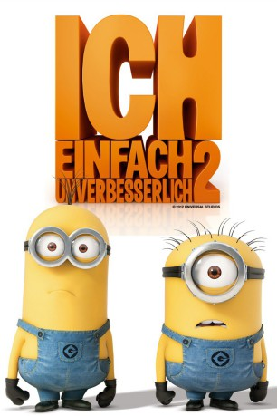

Alternativ: Despicable Me 2
Auszeichnungen: für 2 Oscars nominiert
 
 IMDB-Wertung: 7.4 / 10
IMDB-Wertung: 7.4 / 10  Metascore:
Metascore: 
Nachdem der Superschurke Gru die drei Waisenkinder Margo, Edith und Agnes adoptiert hat, hat sich in seinem Leben viel geändert. Anstatt als Griesgram Verbrechen zu begehen, dreht sich sein Leben nun um Gute-Nacht-Geschichten, Kindergeburtstage und erste Verehrer der Mädchen. Sein neues Leben wird plötzlich gestört, als Lucy, eine Agentin der geheimen Anti-Villain League, Gru gegen seinen Willen zu deren Zentrale führt. Dort bekommt Gru den Auftrag, die Welt vor einem neuen Bösewicht zu retten. Eifrig macht sich Gru ans Werk und bekommt dabei erneut Hilfe von Dr. Nefario und seinen meist sehr tollpatschigen Minions. Doch seine neue Aufgabe mit der Erziehung seiner Adoptivtöchter in Einklang zu bringen ist nicht leicht und auch mit der Situation, dass Lucy auch außerhalb der Arbeit sehr von Gru angetan ist, überfordert den ehemaligen Einzelgänger.
Jahr: 2013
Dauer: 98 Minuten
FSK: 0
Land: USA Studio: Universal PicturesTonspuren: DTS - ,
Untertitel: Deutsch,
Auflösung: 1080p (1920x1040) Größe: 5683 MB
Genre: Animation/Trick, Komödie, Familie
Regisseur: Pierre Coffin, Chris Renaud
Drehbuch: Cinco Paul, Ken Daurio
Soundtrack: Heitor Pereira, Pharrell Williams
Darsteller:
Datei: X:\Kinder Collections\Ich, einfach unverbesserlich\Ich - Einfach unverbesserlich 2 (2013, FSKo.Al., 1920x1040) 3D.mkv seit 03.07.2015
Festplatte: Kinder-Filme+Trick
 Es gibt insgesamt 13 Filme in der Gruppe 'Kinder Collections\Ich, einfach unverbesserlich'
Es gibt insgesamt 13 Filme in der Gruppe 'Kinder Collections\Ich, einfach unverbesserlich'